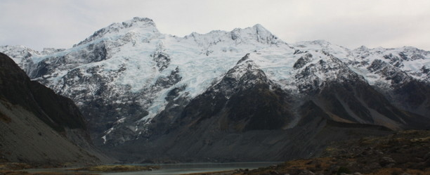

Publicado el: 1 de noviembre de 2024 por Frodo Bolsón | Categoría: Aventura

Rivendel, el refugio de los elfos, es un lugar impresionante donde la serenidad y la belleza se entrelazan. Los paisajes exuberantes y la arquitectura antigua lo convierten en un lugar de maravillas. Situado en las profundidades de las Montañas Nubladas, este refugio mágico se ha convertido en un santuario para aquellos que buscan paz y conocimiento.
Fundado por Elrond medio-elfo, Rivendel tiene una rica historia que se remonta a la Segunda Edad. Sirvió como refugio para muchos, incluidos los héroes de la Tierra Media durante la Guerra del Anillo. La Última Alianza de Elfos y Hombres se forjó aquí, mostrando la unidad y la fuerza de sus habitantes.
Viajar a Rivendel puede ser una aventura en sí misma. Muchos caminos conducen a este valle escondido, pero la ruta más pintoresca es a través de las Montañas Nubladas. Los aventureros a menudo se ven cautivados por las vistas impresionantes y las antiguas historias susurradas por los vientos de las montañas.
Los visitantes pueden disfrutar de diversas actividades, como:
Para aprovechar al máximo tu visita a Rivendel, considera los siguientes consejos:
Rivendel es más que un destino; es una experiencia. La armonía de la naturaleza y la cultura élfica lo convierte en un lugar que debes visitar en la Tierra Media. Ya sea que busques aventura, tranquilidad o conocimiento, Rivendel tiene algo que ofrecer a todos.

Explora todos los secretos de la ciudad subterránea de los enanos, un lugar lleno de historia y misterios.
Publicado el: Oct 20, 2024 por Gandalf
Leer más
La majestuosa ciudad blanca, una fortaleza de historia, defensa y misterio.
Publicado el: Oct 15, 2024 por Aragorn
Leer más
La capital de Rohan, un lugar lleno de historia, praderas y la nobleza de los jinetes del reino.
Publicado el: Oct 10, 2024 por Legolas
Leer másBilbo Baggins
"Este artículo me ha traído muchos recuerdos de mis días en Rivendell. Es un lugar que realmente vale la pena visitar. La paz que se respira allí es indescriptible."
Frodo Baggins
"Rivendell fue fundamental para nuestra misión. La sabiduría de Elrond y los demás elfos fue crucial para que pudiéramos completar nuestra tarea. Muy buen artículo sobre este increíble lugar."